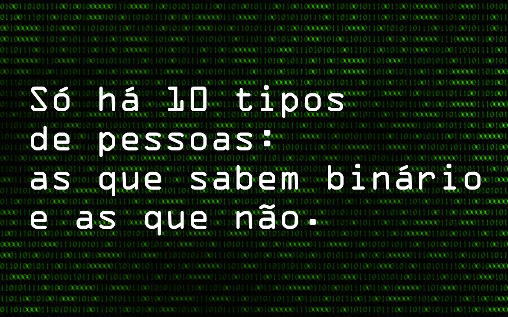

CONVERSOR DE NÚMEROS
Esta é uma página que permite os usuários a converter seus números de sistemas numéricos diferentes, como o binário, hexadecimal e octal.
Binário
O sistema binário ou de base 2 é um sistema de numeração posicional em que todas as quantidades se representam com base em dois números, ou seja, zero e um. Os computadores digitais trabalham internamente com dois níveis de tensão, pelo que o seu sistema de numeração natural é o sistema binário.
